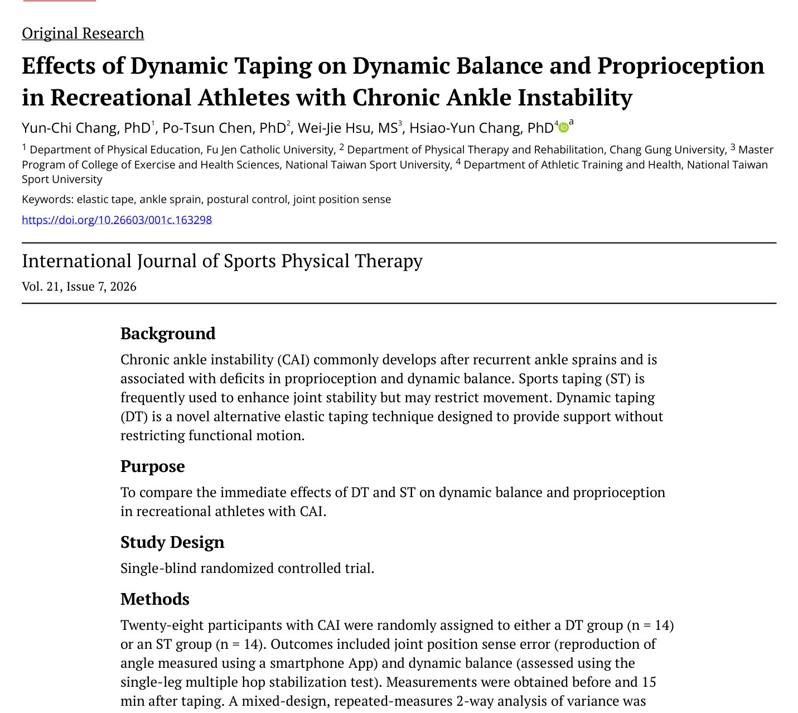
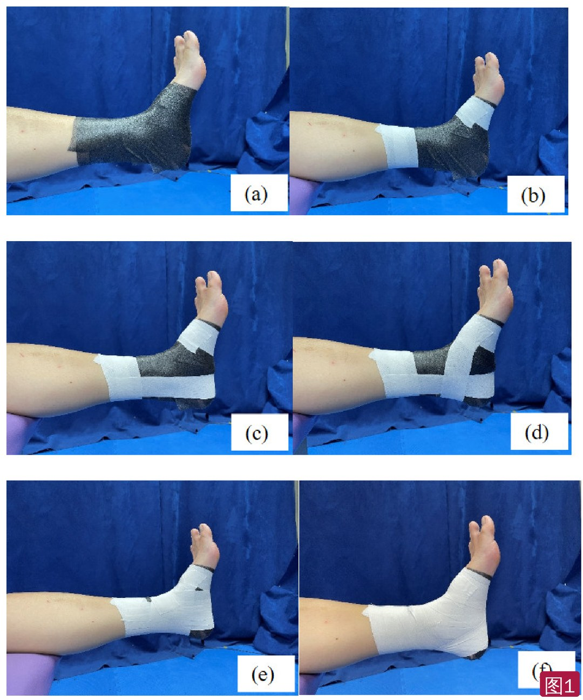
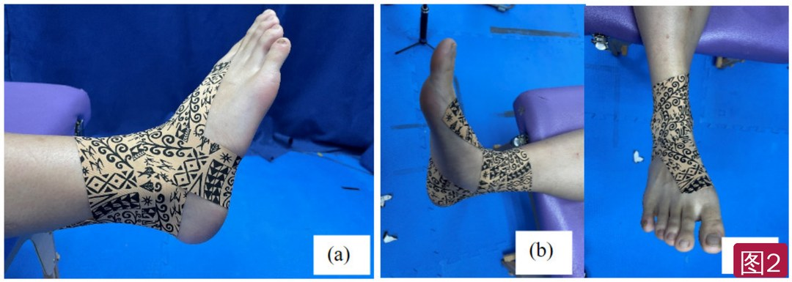
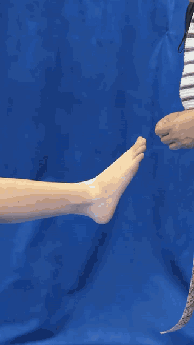
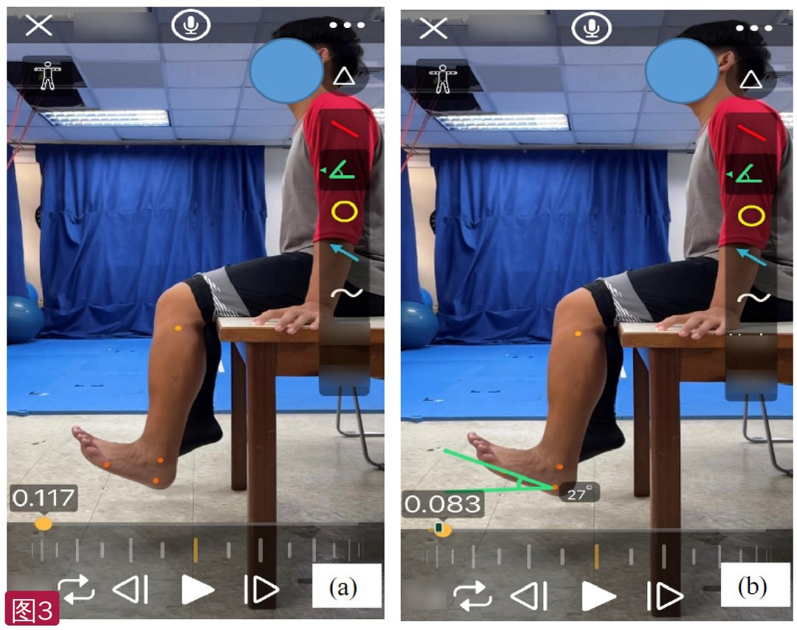
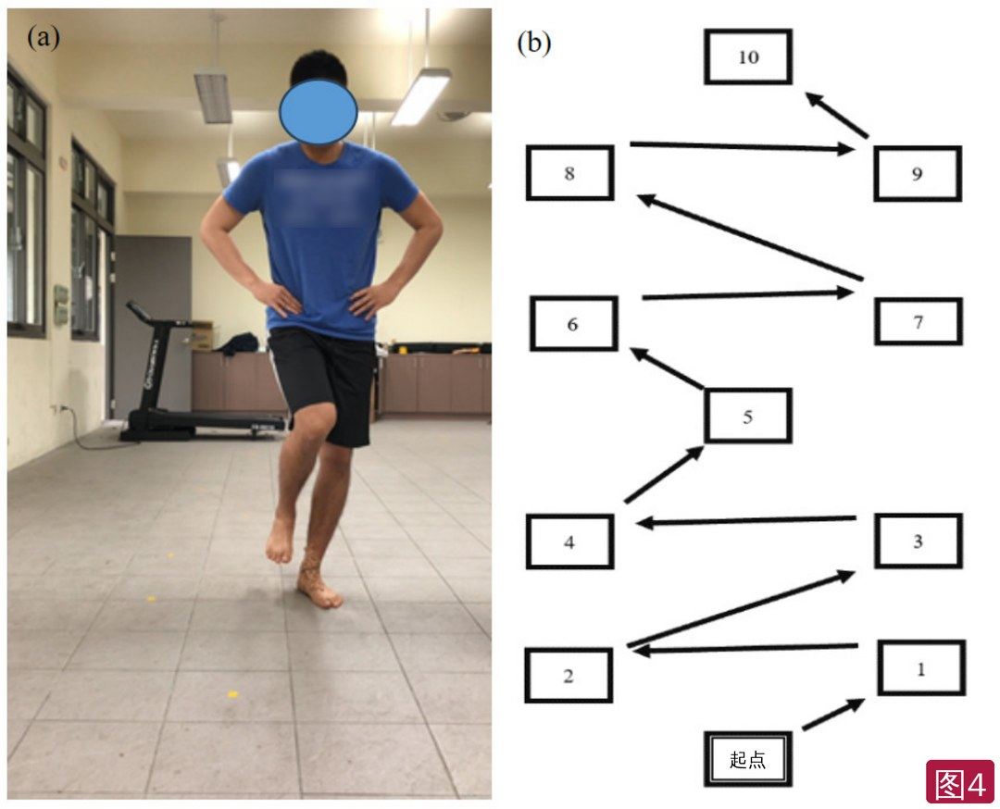

🔖原文首页（IJSPT 2026 年第 21 卷第 7 期）
📚 文献卡片
▪ 英文原题：Effects of Dynamic Taping on Dynamic Balance and Proprioception in Recreational Athletes with Chronic Ankle Instability（动态贴扎对慢性踝关节不稳业余运动员动态平衡和本体感觉的影响）
▪ 作者：Yun-Chi Chang（张允琪）, PhD · Po-Tsun Chen, PhD · Wei-Jie Hsu, MS · Hsiao-Yun Chang（张晓昀）, PhD
▪ 机构：辅仁大学体育学系；长庚大学物理治疗学系；台湾体育运动大学运动保健学系
▪ 期刊：International Journal of Sports Physical Therapy（IJSPT）
▪ 年卷期：2026;21(7):681-692
▪ PMCID：PMC13327846
▪ 研究类型：单盲随机对照试验
▪ 证据级别：2 级
▪ 关键词：elastic tape · ankle sprain · postural control · joint position sense
踝扭伤是运动中最常见的损伤之一，发生率约 0.72～13.6 次/1000 运动小时；80%～90% 为外侧踝扭伤。外侧扭伤者中 80% 会复发，反复扭伤者中 75% 会发展为慢性踝关节不稳（CAI），表现为本体感觉和平衡受损。
CAI 运动员常用运动白贴（ST，非弹性）保护踝关节：能增加稳定，但限制活动度和表现。弹性贴则能让运动员自由活动。肌内效贴能刺激皮肤感受器、改善本体感觉，但不能提供支撑。
动态贴扎（Dynamic Tape，DT）由澳大利亚物理治疗师 Ryan Kendrick 发明：可以多方向拉伸，弹性像橡皮筋一样强，可以通过改变运动模式来管理负荷、吸收外力、辅助发力。此前研究只看过急性扭伤、平足或 CAI 的静态平衡，DT 能否改善 CAI 的动态平衡尚不清楚。
| 项目 | 内容 |
|---|---|
| 研究对象 | 28 名 CAI 业余运动员（CAIT <25 分），随机分为 DT 组和 ST 组，每组 14 人（男女各 7） |
| 干预 | ST：传统白贴（马镫、马蹄、8 字、锁跟）；DT：动态贴扎（见图 2 和视频） |
| 结局 | 关节位置觉误差（手机测角 App）；动态平衡（单腿多次跳跃稳定测试）；贴扎前和贴扎后 15 分钟 |
| 本体感觉 | 两组位置觉误差都显著下降（ST 6.64° → 2.52°，DT 5.40° → 2.23°），组间无差异 |
| 动态平衡 | 只有 DT 组显著改善（87.38 → 64.64 分，越低越好），ST 组无显著变化（81.20 → 76.21 分）；交互作用 F = 20.42，P < 0.001，η² = 0.44 |
一句话概括：两种贴扎都能马上改善踝的位置觉，但只有动态贴扎同时改善了跳跃落地的动态平衡。
• 单盲随机对照，前测-后测设计；按 G*Power 计算（效应量 f = 0.5，检验效能 0.8，α = 0.05，考虑 10% 脱落）需 28 人
• 纳入：至少一次踝扭伤且 CAIT <25 分；近 3 个月下肢无其他肌骨损伤或手术；每周至少运动 2 次、每次 2 小时以上
• 排除：下肢骨折或手术史；神经或前庭功能障碍
• 两组基线（年龄、身高、体重、CAIT、运动频率、性别）无显著差异（表 1）
使用 Mueller MTape（1.5 英寸）。先用衬垫包住足和踝，在小腿下端和前足打锚条，再依次贴马镫、马蹄、8 字和锁跟（图 1）。这些手法限制踝关节活动、增加稳定。

🔖图1：运动白贴步骤。(a) 衬垫，(b) 锚条，(c) 马镫，(d) 马蹄，(e) 8 字，(f) 锁跟
按 DT 官方教学视频操作，贴扎人员都有 DT 1、2 级国际认证；受试者坐位。
• ① 足背屈 + 外翻：从第一趾背侧起贴，斜行 30°～45° 越过足背和踝关节到外踝，再绕过足跟
• ② 足跖屈 + 外翻位：从外踝贴到足跟，绕过跟骨底部
• ③ 足底朝向足跟、中立位：从足外侧绕向距骨，最后锚定在内踝上方靠近小腿处

🔖图2：动态贴扎完成后的外观。(a) 外侧观，(b) 内侧观，(c) 上面观——从第一趾背侧起，斜越足背到外踝，绕足跟和跟骨，止于内踝上方

🔖动图：踝关节动态贴扎完整操作示范（原文补充视频，2 倍速播放）
• 坐位屈膝 90°、踝自然下垂（图 3）；在腓骨头、外踝、第五跖骨头和足外侧贴彩色标记，用手机测角 App（G-pro Goniometer）在 1.5 m 外测角
• 目标角度为全踝活动度（跖屈 + 背屈）的 50%；闭眼记住该位置，练习 3 次后正式测 3 次取平均
• 测试时戴眼罩、耳机播放白噪声，排除视觉和前庭线索；重测信度 ICC = 0.940

🔖图3：手机 App 测量踝关节主动活动度。(a) 起始位，(b) 终止位（App 界面英文已模糊处理）
• 热身做 3～5 次单腿跳（不在测试标记上练习），然后沿预设顺序单腿连续跳过各标记点，每次落地后保持稳定 5 秒（图 4）
• 记两类错误：落地错误（落点错误、对线丢失）和平衡错误（失去姿势控制、另一只脚着地等）
• 动态平衡得分 = 落地错误数 × 10 + 平衡错误数 × 3，分数越低越好；重测信度 ICC = 0.868

🔖图4：单腿多次跳跃稳定测试。(a) 测试场景，(b) 跳跃顺序：从起点依次跳到 1～10 号标记（T 恤字样已模糊处理，“Start”已改为“起点”）
表1 受试者基本特征（n = 28）
| 指标 | ST 组（n = 14） | DT 组（n = 14） | F | P |
|---|---|---|---|---|
| 年龄（岁） | 21.07 ± 1.20 | 20.50 ± 0.65 | 1.15 | 0.135 |
| 身高（cm） | 168.21 ± 10.10 | 169.21 ± 9.84 | 0.018 | 0.779 |
| 体重（kg） | 65.50 ± 16.96 | 66.28 ± 20.11 | 0.051 | 0.912 |
| CAIT 评分 | 16.92 ± 3.02 | 20.50 ± 3.74 | 0.832 | 0.956 |
| 运动频率（天/周） | 2.5 ± 1.65 | 2.5 ± 1.55 | 0.028 | 1.00 |
| 性别（男/女） | 7/7 | 7/7 | — | — |
CAIT：坎伯兰踝关节不稳工具；ST：运动白贴；DT：动态贴扎。
表2 关节位置觉误差和动态平衡得分（均数 ± 标准差）
| 指标 | ST 组 前测 | ST 组 后测 | DT 组 前测 | DT 组 后测 |
|---|---|---|---|---|
| 位置觉误差（°） | 6.64 ± 4.11* | 2.52 ± 2.28* | 5.40 ± 3.07* | 2.23 ± 2.07* |
| 动态平衡得分 | 81.20 ± 21.15 | 76.21 ± 19.97 | 87.38 ± 25.83* | 64.64 ± 20.69* |
| 落地错误 | 6.36 ± 1.68 | 5.93 ± 1.64 | 6.45 ± 2.25* | 4.75 ± 1.85* |
| 平衡错误 | 5.87 ± 1.87 | 5.64 ± 2.05 | 7.62 ± 2.85* | 5.71 ± 2.63* |
* P < 0.05，前后测差异显著。
表3 混合设计重复测量双因素方差分析
| 指标 | 时间效应 F / P / η² | 组别效应 F / P / η² | 交互作用 F / P / η²（检验效能） |
|---|---|---|---|
| 位置觉误差 | 49.54 / <0.001* / 0.656 | 0.571 / 0.457 / 0.021 | 0.847 / 0.366 / 0.032（0.144） |
| 动态平衡得分 | 52.57 / <0.001* / 0.669 | 0.091 / 0.765 / 0.003 | 20.42 / <0.001* / 0.440（0.992） |
| 落地错误 | 32.50 / <0.001* / 0.556 | 0.630 / 0.434 / 0.024 | 11.61 / 0.002* / 0.309（0.906） |
| 平衡错误 | 14.44 / 0.001* / 0.357 | 1.126 / 0.298 / 0.042 | 8.845 / 0.006* / 0.254（0.817） |
* P < 0.05。
• 本体感觉：两组位置觉误差都明显下降（时间效应 η² = 0.656），但无交互作用——两种贴扎改善程度相近
• 动态平衡：显著的组别 × 时间交互作用（η² = 0.44，大效应）；只有 DT 组总分、落地错误和平衡错误都显著下降，ST 组均无显著变化
• 皮肤感受器刺激：两种贴扎都刺激皮肤机械感受器，增加本体感觉反馈、提高运动神经元激活——所以位置觉都改善了
• 本体感觉改善 ≠ 动态平衡改善：动态平衡还受其他因素影响；白贴带来的感觉输入可能不足以改变跳跃落地时的姿势控制
• 弹性随动：弹性贴更贴合皮肤，随动作牵拉皮肤和筋膜，持续提供感觉输入
• 纠正位置错误 + 弹性助力：CAI 踝关节距骨常前移；DT 可能起稳定作用，其强回弹和弹性阻力帮助吸收负荷、协助发力，纠正错误的关节或运动模式
• 与 Lim 和 Park 在平足者中的结果一致：DT 比无贴扎显著提高 Y 平衡测试成绩，且不限制活动度
• 样本量小，增加 II 类错误风险，结果只适用于 CAI 业余运动员
• 只看了贴后 15 分钟的即时效应，不知道长时间运动中效果能否维持
• 没有评估贴扎与再损伤的关系；未来应在切步、折返跑等专项动作中评估
• 亮点：直接比较临床常用的白贴和动态贴扎；动态平衡用跳跃落地任务，比静态站立更贴近运动；附有完整贴扎视频，可直接学习
• 没有对照组：缺少无贴扎或假贴扎组，位置觉的改善可能部分来自练习效应（同样的测试做两次）
• 盲法交代不清：称为“单盲”，但没说明谁被盲；贴扎外观完全不同，受试者和测试者都很难盲
• 设计描述矛盾：摘要写随机对照试验，方法部分又称“前测-后测比较设计”；ST 组用了衬垫，可能削弱皮肤刺激
• 基线 CAIT 差异被忽略：ST 组 16.92 分、DT 组 20.50 分，相差约 3.6 分（DT 组不稳较轻），表中 P = 0.956 与此差距不相符；表 1 年龄 P 值 0.135 也与 F = 1.15 不太匹配
• 数字不一致：正文落地错误交互作用写 F = 111.61，表 3 为 11.61；摘要 η² 写 0.03/0.44，正文 0.032/0.440；表 3 自由度写 F(2,28)，摘要为 F(1,26)
• 结果解读需谨慎：DT 组前测动态平衡得分更差（87.38 vs 81.20），存在一定回归均值的可能；“η Power”等表头和“may is more adaptable”等语句有笔误
① 两种都能：即时改善踝关节位置觉（误差约减少 3～4°）
② 只有 DT：改善单腿跳跃落地的动态平衡（落地错误和平衡错误都减少）
③ DT 贴法：背屈外翻起贴于第一趾背侧 → 斜越足背到外踝 → 绕足跟和跟骨 → 止于内踝上方
④ 可能机制：皮肤感觉输入 + 弹性回弹助力和稳定，同时不限制活动
★ 注意：小样本、只看 15 分钟即时效应、无空白对照，长期效果和预防再扭伤作用未知
欢迎关注骨科康复小黄公众号，获取更多物理治疗的专业知识！
📄参考文献：
Chang YC, Chen PT, Hsu WJ, Chang HY. Effects of Dynamic Taping on Dynamic Balance and Proprioception in Recreational Athletes with Chronic Ankle Instability. Int J Sports Phys Ther. 2026;21(7):681-692. PMCID: PMC13327846.
文中 4 张图片和动图均来自原文及其补充视频：图 3 App 界面英文和图 4 T 恤字样已模糊，“Start”改为“起点”；表 1～3 已译为中文，仅用于学术交流。